ILUSTRACIÓN
Una selección de proyectos de ilustración donde la creatividad y la expresión visual se unen para dar forma a ideas, conceptos y pequeñas historias a través del dibujo.
CUENTO - 2025
Proyecto de cuento ilustrado basado en el romance imposible entre el sol y la luna.
La propuesta explora la narrativa visual a través de una serie de ilustraciones que acompañan y construyen la historia, utilizando el color, la composición y la atmósfera para diferenciar el día y la noche y representar la conexión entre ambos personajes.
El proyecto busca crear un universo visual poético y emocional, donde cada ilustración transmite el paso del tiempo, la distancia y el deseo de encuentro entre Lorenzo y Catalina.
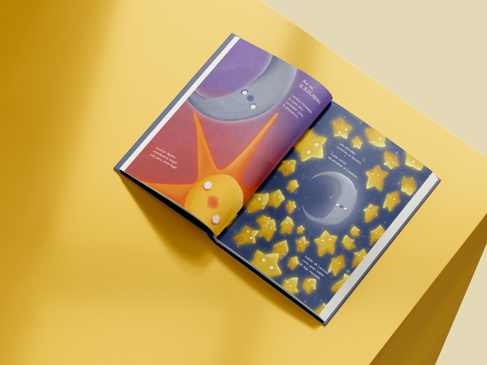
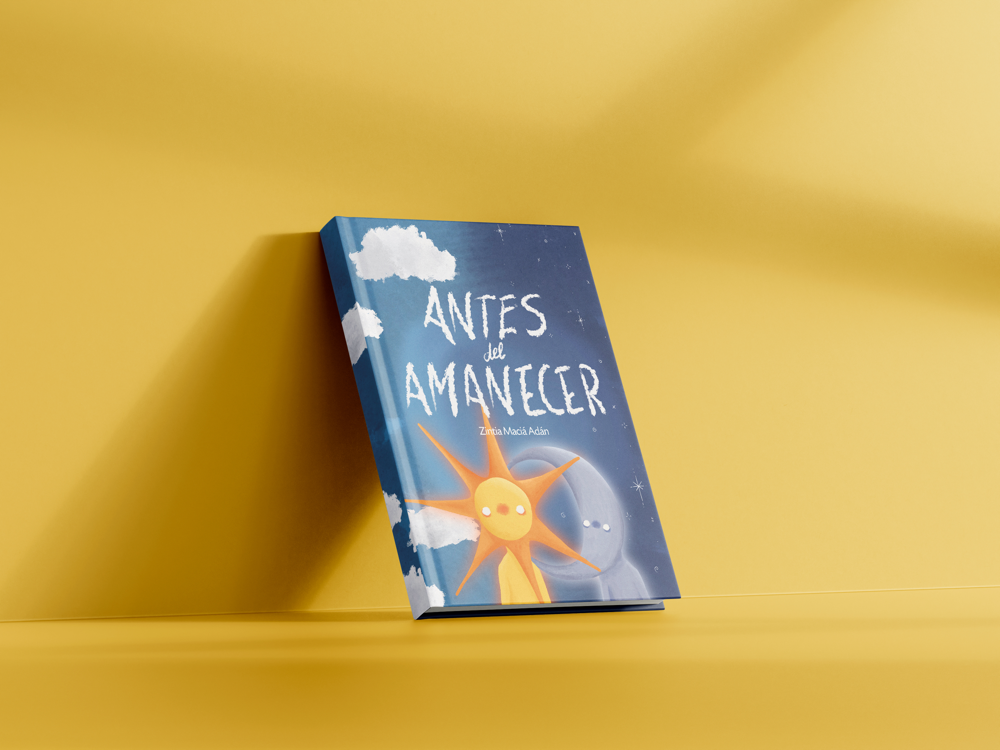
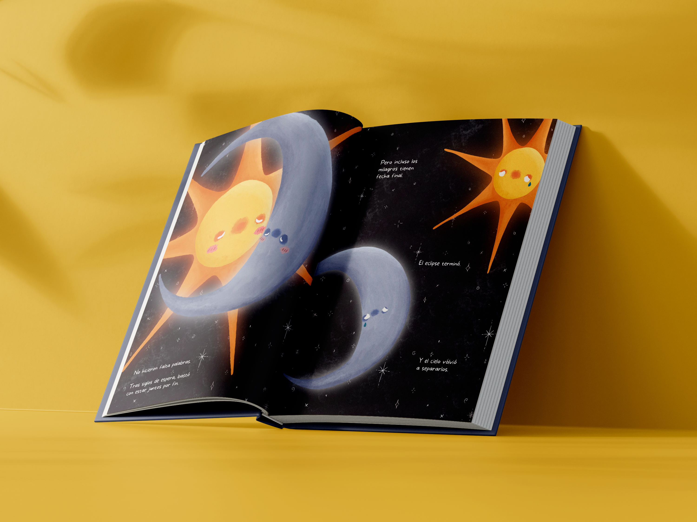
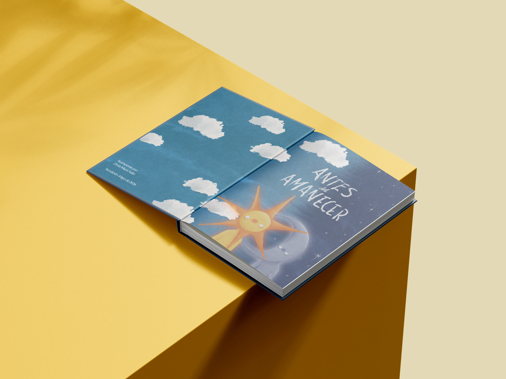
ILUSTRACIÓN PERSONAL - 2026
Autorretrato realizado para representar cómo soy tanto a nivel personal como como diseñadora.
A través de la ilustración y de diferentes elementos gráficos, busco reflejar mi personalidad, mis gustos y mi forma de entender el diseño.
El proyecto se completa con una propuesta de packaging y una identidad visual propia, mostrando cómo puedo trasladar mi estilo personal a diferentes aplicaciones gráficas.
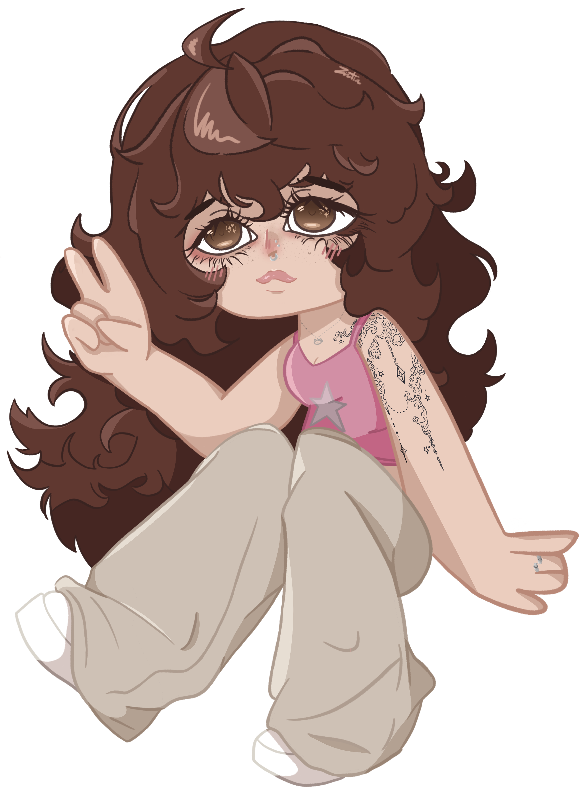
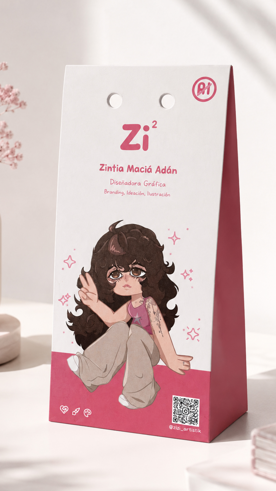
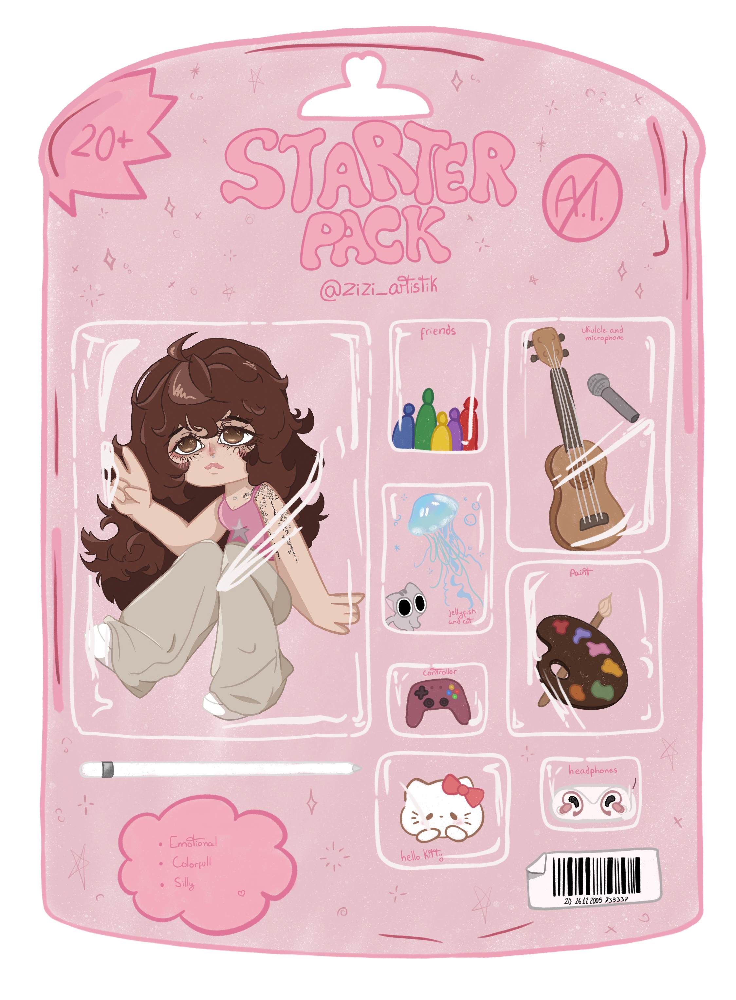
LA ÚLTIMA CENA DE LA NONNA - 2025
La Última Cena de la Nonna es un proyecto de diseño de un juego de mesa estratégico y narrativo ambientado en la Italia de los años 20.
La propuesta desarrolla una identidad visual basada en la ilustración cartoon, con personajes expresivos y personalidades muy marcadas que reflejan sus diferentes roles dentro de la historia.
El proyecto se completa con la ilustración del tablero, cartas y packaging, creando un universo gráfico cohesionado que combina drama familiar y estética vintage.
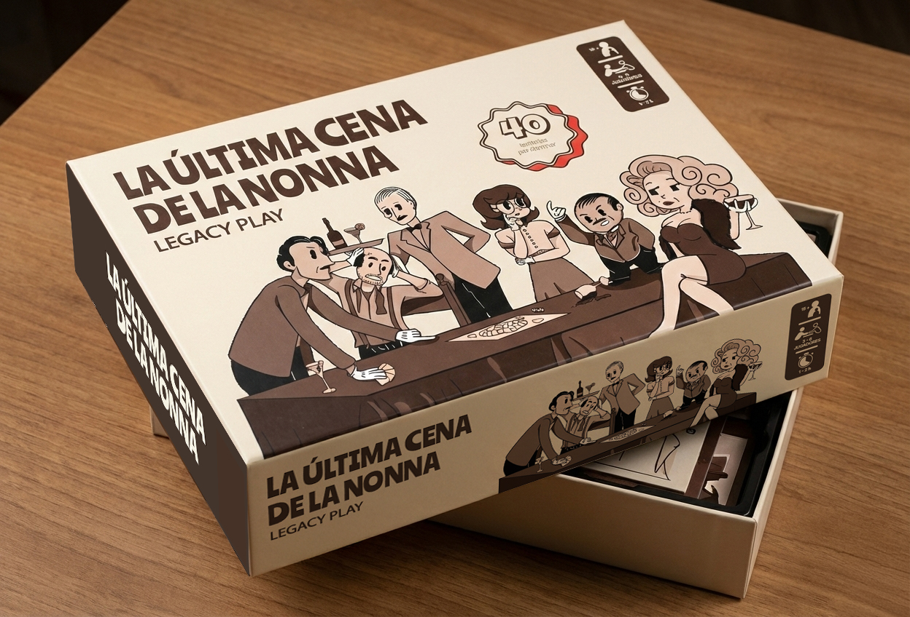
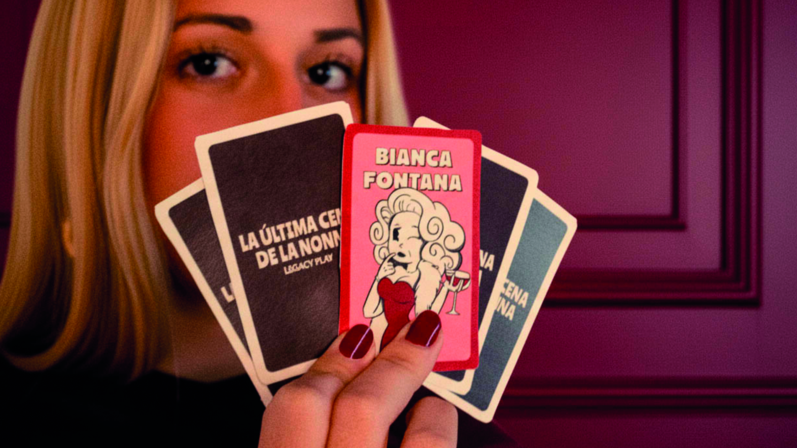
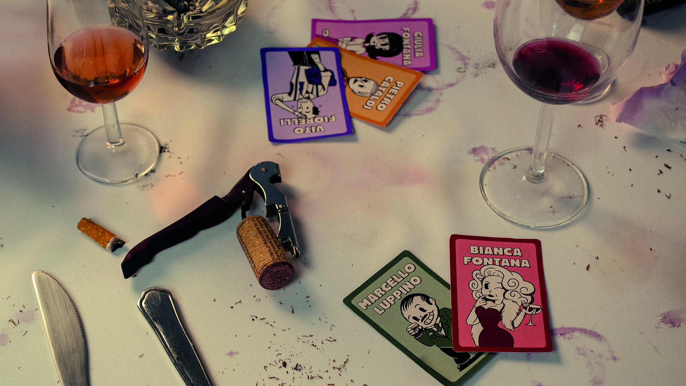
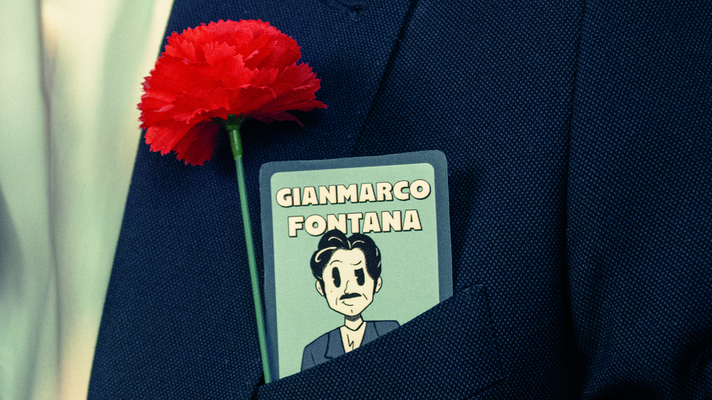